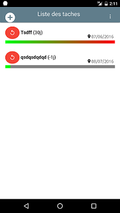

Introduction
TaskMe est une application Android gratuite permettant d'ordonner et de gérer vos tâches récurrentes. Vous n'oublierez plus rien !
- Créez des tâches avec des récurrences d'unité jours, semaines, mois ou années.
- Classifiez et triez vos tâches.
- Visualisez en un clin d'oeil l'avancement de l'échéance grâce à une jauge.
- Réinitialisez vos tâches en un coup de pouce
- Soyez notifier lorsqu'une tâche arrive à échéance